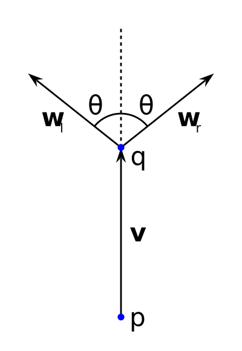

Tree Derivations
A tour of Haskell by way of drawing trees
Bob Grudem
Purpose
Give an introductory talk at Boston Haskell that:
- Uses the diagrams package
- Uses standard containers and functions
- Shows a Haskell style of problem solving
Topic—Drawing Trees
We will develop from scratch a
program to draw a stick figure...

Topic—Drawing Trees
...then methodically refactor the code
to enable drawing tapered branches...

Topic—Drawing Trees
...and refactor once more to model the tree in 3D.

Standard Tree Container
- cabal install containers
- import Data.Tree
- We will use the following:
- Tree type
- unfoldTree and flatten functions
Diagrams
- cabal install diagrams (takes about 5 minutes)
- Rich, fascinating, addictive, highly factored, rigorous
- We will only use a small set of concepts and features:
- import Diagrams.Prelude
- import Diagrams.Backend.SVG.CmdLine
- Points (P2, origin)
- Vectors (R2, unitY, magnitude)
- Diagrams (Diagram SVG R2, fromOffsets,
scale, rotateBy, place, pad) - Command line (defaultMain)
- Etc. (mconcat, .+^, #)
Development Process
- Examine the problem details
- Determine the input and output data types
- Determine a sequence of intervening types
- Determine the functions to accomplish each transformation
- Stitch them together
Problem Details
|  |
Given: p, v, R, θ Then: q = p displaced by v |
Input and Output Types
- Our tree has fixed θ and R, leaving (p, v) as the data in a node, for an input type of TreeNode = (P2, R2).
- Our output type is an SVG file.
Intervening Type Sequence
The following is one possible sequence of types, informed by knowledge of what the containers and diagrams packages offer:
- TreeNode
- Tree TreeNode
- Tree (Diagram SVG R2)
- [Diagram SVG R2]
- Diagram SVG R2
- SVG file
Functions
| TreeNode | (origin, unitY) | ||
| Tree TreeNode | unfoldTree f where f :: TreeNode → [TreeNode] |
||
| Tree (Diagram SVG R2) | fmap f where f :: TreeNode → Diagram SVG R2 |
||
| [Diagram SVG R2] | flatten | ||
| Diagram SVG R2 | mconcat | ||
| SVG file | defaultMain |
TreeNode → Tree TreeNode
unfoldTree invokes the branches function recursively starting from seed to produce a tree. Note that this process never ends—buildTree produces an infinite tree!
buildTree :: Tree TreeNode
buildTree = unfoldTree branches seed
seed :: TreeNode
seed = (origin, unitY)
branches :: TreeNode -> [TreeNode]
branches (p, v) = ((p, v), [(q, br (1/7)), (q, br (-1/7))])
where q = p .+^ v
br a = v # scale 0.6 # rotateBy a
TreeNode → Tree TreeNode—Finitely
branches decides based on segment length when to stop.
buildTree :: Tree TreeNode
buildTree = unfoldTree branches seed
seed :: TreeNode
seed = (origin, unitY)
branches :: TreeNode -> [TreeNode]
branches (p, v)
| magnitude v < 0.05 = ((p, v), [])
| otherwise = ((p, v), pvs)
where pvs = [(q, br (1/7)), (q, br (-1/7))]
q = p .+^ v
br a = v # scale 0.6 # rotateBy a
Tree TreeNode → Tree (Diagram SVG R2)
fmap applies the drawBranch function to every node of a tree without mention of the latter—an example of point-free style.
drawBranch creates a diagram of a line segment between p and p + v— a piece of data, not an image.
renderTree :: Tree TreeNode -> Tree (Diagram SVG R2)
renderTree = fmap drawBranch
drawBranch :: TreeNode -> Diagram SVG R2
drawBranch (p, v) = place (fromOffsets [v]) p
Tree (Diagram SVG R2) to SVG file
We extend renderTree to a composition pipeline invoking mconcat after flatten after fmap drawBranch.
main is the program entrypoint, which invokes defaultMain to create an SVG file from the result of renderTree buildTree.
main :: IO ()
main = defaultMain $ renderTree buildTree
renderTree :: Tree TreeNode -> Diagram SVG R2
renderTree = mconcat . flatten . fmap drawBranch
A sample command line to run the program to create the file tree.svg with a width of 400 pixels:
λ: dist/build/stick-figure-0/stick-figure-0 -w 400 -o tree.svg
Stick Figure—The Code
Assembling code from the previous slides, with a few changes—add import statements, apply pad to the final diagram, remove unnecessary type declarations:
import Data.Tree(flatten, unfoldTree)
import Diagrams.Backend.SVG.CmdLine(defaultMain)
import Diagrams.Prelude
main = defaultMain $ pad 1.1 $ renderTree buildTree
renderTree = mconcat . flatten . fmap drawBranch
buildTree = unfoldTree branches seed
seed = (origin, unitY)
drawBranch (p, v) = place (fromOffsets [v]) p
branches (p, v)
| magnitude v < 0.05 = ((p, v), [])
| otherwise = ((p, v), pvs)
where pvs = [(q, br (1/7)), (q, br (-1/7))]
q = p .+^ v
br a = v # scale 0.6 # rotateBy a
Analysis—What of Haskell?
- The module system, Hackage, the Haskell Platform
- Function definition, nested functions
- Function application in 3 ways: f x, f $ x, x # f
- Point-free composition, higher-order functions, functors
- Partial application, currying
- Tuples, lists, pattern matching
- Guards, the where clause, apostrophe in names
- Custom operators—(.+^) from Data.AffineSpace
- Type inference, type classes and instances
- The IO monad, lazy evaluation
Analysis—What Not?
- Explicit data structures
- Explicit type declarations
- Explicit recursion
- Infinite data structures
- Sequence, loops, and conditionals (!)
- Comments and whitespace (not much)
Analysis—Further Comments
- Declarative specification
- Dense code—6 functions, 5 one-liners
- Almost-infinite tree (?)
- Control flow structures as code
- Layout mostly to suit taste
- Type inference as convenience
Preparing for Tapered—
Overview
Refactor the code (no change to behavior!)
- Add module name and type declarations
- Extract constants into configuration data structure
- Extract calculation of branch tips into new function
- Add explicit width
- Add white space and reformat slightly
Preparing for Tapered
Add module name and type declarations
module Main where
import Data.Tree(Tree, flatten, unfoldTree)
import Diagrams.Backend.SVG.CmdLine(defaultMain)
import Diagrams.Backend.SVG(SVG)
import Diagrams.Prelude
type TreeNode = (P2, R2)
type Dgm = Diagram SVG R2
Preparing for Tapered
Define configuration data structure
data TreeConfig = TC {
tcScale :: Double,
tcCutOff :: Double,
tcMinWidth :: Double,
tcInitialWidth :: Double,
tcBranchScale :: Double,
tcBranchAngle :: Double
} deriving (Show)
Preparing for Tapered
Extract constants into configuration data structure
tc :: TreeConfig
tc = TC {
tcScale = s,
tcCutOff = 0.05 * s,
tcMinWidth = 0.01 * s,
tcInitialWidth = 0.01 * s,
tcBranchScale = 0.6,
tcBranchAngle = 1/7
}
where s = 10000
Preparing for Tapered
Extract calculation of branch tips into new function
branches :: TreeNode -> (TreeNode, [TreeNode])
branches n@(_, v)
| magnitude v < tcCutOff tc = (n, [])
| otherwise = (n, branchTips n)
branchTips :: TreeNode -> [TreeNode]
branchTips (p, v) = [(p', br a), (p', br (-a))]
where p' = p .+^ v
br a = v # scale (tcBranchScale tc) # rotateBy a
a = tcBranchAngle tc
Preparing for Tapered
Add explicit width
type TreeNode = (P2, R2, Double)
tcInitialWidth :: Double,
tcInitialWidth = 0.01 * s,
seed = (origin, unitY ^* tcScale tc, tcInitialWidth tc)
drawBranch (p, v, w) = place (fromOffsets [v]) p # lw w
...
branches n@(_, v, _)
...
branchTips (p, v, w) = [(p', br a, w), (p', br (-a), w)]
...
Tapered Branches—The Code
- Increase the initial width and add taper
- If minimum width, draw line; otherwise, draw trapezoid.
- Apply the taper, enforcing a minimum width
Tapered Branches—The Code
Increase the initial width and add taper
tcWidthTaper :: Double,
tcInitialWidth = 0.1 * s,
tcWidthTaper = 0.7,
Tapered Branches—The Code
If minimum width, draw line; otherwise, draw trapezoid.
drawBranch n@(p, v, w) = place d p
where d | w <= tcMinWidth tc = lineSegment v w
| otherwise = trapezoid n
lineSegment v w = fromOffsets [v] # lw w
trapezoid (p, v, w) = (closeLine . lineFromVertices) [ p, a, b, c, d ]
# strokeLoop # fc black # lw 0.01
where p' = p .+^ v
w' = taperWidth w
n = v # rotateBy (1/4) # normalized
w2 = w / 2 ; w2' = w' / 2
a = p .-^ (w2 *^ n) ; b = p' .-^ (w2' *^ n)
c = p' .+^ (w2' *^ n) ; d = p .+^ (w2 *^ n)
Tapered Branches—The Code
Apply the taper, enforcing a minimum width
taperWidth :: Double -> Double
taperWidth w = max (w * tcWidthTaper tc) (tcMinWidth tc)
branchTips (p, v, w) = [(p', br a, w'), (p', br (-a), w')]
...
w' = taperWidth w
Preparing for 3D—Overview
Refactor the code (no change to behavior!)
- Import 3D libraries
- Change seed to unitZ from unitY
- Add functions to project point and branch node
- Apply rotation in 3D instead of 2D
- Update comments to reflect new types
Preparing for 3D
Import 3D libraries and change seed to unitZ
import Diagrams.ThreeD.Transform(aboutY)
import Diagrams.ThreeD.Types(unp3)
import Diagrams.ThreeD.Vector(unitZ)
seed = (origin, unitZ ^* tcScale tc, tcInitialWidth tc)
Preparing for 3D
Add functions to project point and branch node
renderTree = mconcat . flatten . fmap drawBranch . fmap projectNode
--projectNode :: TreeNode3 -> TreeNode
projectNode (p, v, w) = (p', v', w)
where q = p .+^ v
q' = projectPtXZ q
p' = projectPtXZ p
v' = q' .-. p'
--projectPtXZ :: P3 -> P2
projectPtXZ p = case unp3 p of (x, _, z) -> p2 (x, z)
Preparing for 3D
Apply rotation in 3D instead of 2D
br a = v # scale (tcBranchScale tc) # t a
...
t a = transform (aboutY (a @@ turn))
Preparing for 3D
Update comments to reflect new types
--type TreeNode3 = (P3, R3, Double)
--renderTree :: Tree TreeNode3 -> Dgm
--buildTree :: Tree TreeNode3
--seed :: TreeNode3
--branches :: TreeNode3 -> (TreeNode3, [TreeNode3])
--branchTips :: TreeNode3 -> [TreeNode3]
Deep 3D—The Code
- Import needed library functions
- Tune cut off length
- Rewrite branchTips
- Add inject and mkTip functions
- Add pointAt'' function
Deep 3D—The Code
Import needed library functions and tune cut off
import Data.Cross(cross3)
...
import Diagrams.Prelude hiding (rotationAbout, direction, angleBetween)
import Diagrams.ThreeD.Transform(aboutY, pointAt', rotationAbout)
import Diagrams.ThreeD.Types(unp3, R3, r3, T3, Spherical)
import Diagrams.ThreeD.Vector(unitZ, direction, angleBetween)
tcCutOff = 0.12 * s,
Deep 3D—The Code
Rewrite branchTips
-- Build a regular polygon in the XY-plane and tilt it perpendicular
-- to the vector it branches from. Orient the polygon to make the
-- projection more interesting.
--branchTips :: TreeNode3 -> [TreeNode3]
branchTips n@(_, v, _) = polygon po
# map (.-. origin)
# map inject
# map (^+^ (unitZ ^* h))
# map (transform (pointAt'' unitZ unitZ v))
# map (^* (magnitude v * tcBranchScale tc))
# map (mkTip n)
where po = PolygonOpts (PolyRegular c s) (OrientTo v') origin
c = 3 -- number of sides
s = 0.782 -- length of side
v' = r2 (1,3) -- orientation vector
h = 0.623 -- "height" of tips above base
Deep 3D—The Code
Add inject and mkTip functions
--inject :: R2 -> R3
inject v = case unr2 v of (x, y) -> r3 (x, y, 0)
--mkTip :: TreeNode3 -> R3 -> TreeNode3
mkTip (p, v, w) v' = (p .+^ v, v', taperWidth w)
Deep 3D—The Code
Add pointAt'' function
-- Copied from http://projects.haskell.org/diagrams/haddock/src/
-- Diagrams-ThreeD-Transform.html#pointAt
-- and modified to change the calculation of tilt angle.
-- Also eliminating panning, which is done for us automatically
-- by virtue of the relative vector spaces of composed subdiagrams.
-- There is already a function called pointAt'.
--pointAt'' :: R3 -> R3 -> R3 -> T3
pointAt'' about initial final = tilt
where
tiltAngle = angleBetween initial final
tiltDir = direction $ cross3 about final :: Spherical
tilt = rotationAbout origin tiltDir tiltAngle
A Note on Type Inference
According to my hint (Tapered0.hs)
--branchTips :: TreeNode -> [TreeNode]
According to my hint (Deep3D.hs)
--branchTips :: TreeNode3 -> [TreeNode3]
A Note on Type Inference
According to GHCI (cabal repl tapered-0)
tree-derivations$ cabal repl tapered-0
...
Ok, modules loaded: Main.
λ: :t branchTips
branchTips
:: (vector-space-0.8.6:Data.AffineSpace.AffineSpace t,
diagrams-core-1.1.0.3:Diagrams.Core.Transform.Transformable
(vector-space-0.8.6:Data.AffineSpace.Diff t),
diagrams-core-1.1.0.3:Diagrams.Core.V.V
(vector-space-0.8.6:Data.AffineSpace.Diff t)
~ Diagrams.TwoD.Types.R2) =>
(t, vector-space-0.8.6:Data.AffineSpace.Diff t, Double)
-> [(t, vector-space-0.8.6:Data.AffineSpace.Diff t, Double)]
A Note on Type Inference
According to GHCI (cabal repl deep-3d)
tree-derivations$ cabal repl deep-3d
...
Ok, modules loaded: Main.
λ: :t branchTips
branchTips
:: (Data.AffineSpace.AffineSpace t,
Data.AffineSpace.Diff t ~ Diagrams.ThreeD.Types.R3) =>
(t, Diagrams.ThreeD.Types.R3, Double)
-> [(t, Diagrams.ThreeD.Types.R3, Double)]
Resources
| Tree-derivations | http://github.com/bobgru/tree-derivations | |
| The Haskell Platform | http://www.haskell.org/platform | |
| Diagrams | http://projects.haskell.org/diagrams | |
| Standard containers | http://hackage.haskell.org/package/containers-0.5.5.1 | |
| reveal.js | http://lab.hakim.se/reveal-js | |
| Git | http://git-scm.com |
The End